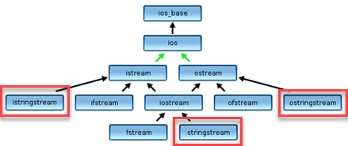

String Streams
The <sstream> header contains classes which allow you to associate a stream with a string in memory, in the same way that the classes in <fstream> allow you to associate a stream with a file. Looking at the class hierarchy below, you can see that istringstream is a kind of istream, (just as ifstream is), while ostringstream is a kind of ostream, just like ofstream is.

To use a string stream for output, follow these three steps:
- Create an ostringstream object.
- Write to the stream object.
- Collect the results using the stream's str() member function.
ostringstream out; // 1. Create the stream
out << "The answer is " << 42; // 2. Write to the stream
string result = out.str(); // 3. Collect the resultsAs you can see, this is most useful when you want a formatted number as part of some other output.
 This course content is offered under a
CC
Attribution Non-Commercial license. Content in this course
can be considered under this license unless otherwise noted.
This course content is offered under a
CC
Attribution Non-Commercial license. Content in this course
can be considered under this license unless otherwise noted.